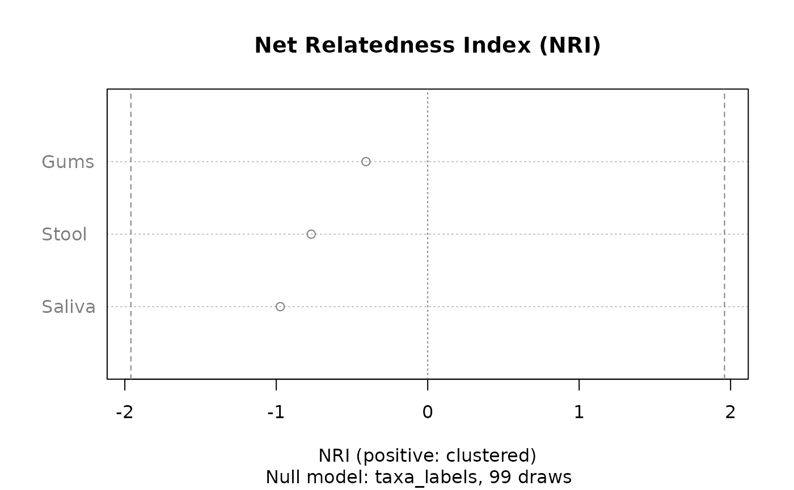

Net Relatedness and Nearest Taxon Indices (SES of MPD and MNTD)
Source:R/phylo_structure.r
mpd_ses.RdTests whether the taxa in each sample are more closely related
(phylogenetic clustering) or more distantly related (overdispersion)
than in random communities: the standardized effect sizes of mpd()
and mntd() against a null model. Their negatives are Webb's Net
Relatedness Index (NRI, from MPD) and Nearest Taxon Index (NTI,
from MNTD), so positive values mean clustering. This is picante's
ses.mpd() and ses.mntd(), and phylocom's comstruct.
Usage
mpd_ses(
counts,
tree = NULL,
taxa_dm = NULL,
weighted = FALSE,
null_model = "taxa_labels",
n_draws = 999L,
n_swaps = 1000L,
margin = 1L,
seed = 0L,
cpus = n_cpus()
)
mntd_ses(
counts,
tree = NULL,
taxa_dm = NULL,
weighted = FALSE,
null_model = "taxa_labels",
n_draws = 999L,
n_swaps = 1000L,
margin = 1L,
seed = 0L,
cpus = n_cpus()
)
# S3 method for class 'ecodive_mpd_ses'
plot(x, groups = NULL, ...)
# S3 method for class 'ecodive_mntd_ses'
plot(x, groups = NULL, ...)Arguments
- counts
A numeric matrix of non-negative abundances (samples \(\times\) taxa, see
margin), or any of the other objects listed in "Input Types". Values need not be integers:mpd()andmntd()use only presence, and the weighted forms only relative abundances. The taxa must have names, to match them to the tips oftreeor the labels oftaxa_dm.- tree
A
phyloobject with branch lengths (none negative or missing), whose tips include every taxon ofcounts(seeread_tree()). Tips that aren't taxa ofcountsare ignored. Can be omitted if a tree is embedded with thecountsobject or asattr(counts, 'tree'). Distances are path lengths along the tree (patristic distances), as fromape::cophenetic.phylo(). The tree may be unrooted, or have polytomies or nodes with one child: none of these change path lengths.- taxa_dm
Instead of
tree: the dissimilarities among the taxa, as adistobject or symmetric matrix (picante'sdis, which may be functional-trait distances, for instance). Labels are matched to the taxa ofcounts; without labels, rows are taken in the order ofcounts' taxa. An embedded tree is ignored whentaxa_dmis given.- weighted
Weight each taxon by its abundance:
weighted_mpd()andweighted_mntd()(picante'sabundance.weighted, phylocom's-a). Default:FALSE- null_model
How the random communities are made. One of
"taxa_labels"(the default),"richness","frequency","sample_pool","phylogeny_pool","independent_swap","trial_swap", or (formpd_ses()only)"exact"; see "Null models". picante's spellings ("taxa.labels","independentswap", ...) are accepted too.- n_draws
The number of random communities per sample (picante's
runs). Default:999- n_swaps
For the two swap models: the number of swaps that make each random table from the observed one (picante's
iterations). Ignored otherwise. Default:1000- margin
The margin containing samples.
1if samples are rows,2if samples are columns. Ignored whencountsis a special object class (e.g.phyloseq). Default:1- seed
An integer seed for the random communities. The same
seedgives identical results, for any number ofcpus. Default:0- cpus
How many parallel processing threads should be used. The default,
n_cpus(), is the CPU cores this R process may use, within any limits set on it. Results are the same for anycpus.- x
A result of
mpd_ses()ormntd_ses().- groups
For
plot(): optional groups of the samples (one value per row ofx), which split and colour the dot chart.- ...
For
plot(): graphical parameters forgraphics::dotchart(), such asmain,xlaborcex.
Value
A data frame with one row per sample, of class
"ecodive_mpd_ses" ("ecodive_mntd_ses"), with columns:
sample: The sample's name.n_taxa: Its number of taxa (non-zero values).obs: Its MPD (MNTD).null_mean,null_sd: The mean and standard deviation (divisor \(n - 1\)) of MPD (MNTD) over the random communities.z: The standardized effect size,(obs - null_mean) / null_sd(picante'smpd.obs.z).nri(nti):-z.rank: The rank ofobsamong itself and the random values, ties averaged.p_value:rank / (n_draws + 1): the lower tail, so a smallp_valuemeans clustering, and one near 1 overdispersion (picante'smpd.obs.p).n_draws: The random communities used: those where MPD (MNTD) is defined (with"frequency", a random sample can have fewer than two taxa).
With null_model = "exact", null_mean and null_sd are exact, and
rank, p_value and n_draws are NA.
Attributes: method ("mpd_ses" or "mntd_ses"), null_model,
n_draws (as given), n_swaps (the swap models only) and weighted.
Details
Null models
null_model | Each random community | Keeps |
"taxa_labels" | the tips' labels shuffled: the table's taxa are moved to tips drawn at random from every tip of tree (or label of taxa_dm) | the table |
"richness" | each sample's values moved to taxa drawn at random from all the table's taxa | each sample's richness and values |
"frequency" | each taxon's values moved to samples drawn at random | each taxon's frequency and values |
"sample_pool" | as "richness", from the taxa present in at least one sample | richness |
"phylogeny_pool" | as "richness", from every tip of tree (or label of taxa_dm) | richness |
"independent_swap" | n_swaps swaps of 2 \(\times\) 2 checkerboards (Gotelli 2000) | each sample's richness and each taxon's frequency |
"trial_swap" | n_swaps attempted swaps (Miklós & Podani 2004) | as above |
"exact" | (no draws) the exact mean and standard deviation of MPD over random sets of tips, as "phylogeny_pool" | richness |
A sample's abundances go with its taxa: under the pool models and
"richness" they are given in random order to the drawn taxa, and in
the swaps each taxon keeps its values (as in picante and phylocom). They
matter only with weighted = TRUE.
Which null model answers which question is discussed by Kembel (2009)
and Hardy (2008): "taxa_labels" and "phylogeny_pool" ask whether the
sample is a random draw from the tree, "richness" and "sample_pool"
whether it is a random draw from the taxa observed, and the swaps also
hold how common each taxon is. Because "taxa_labels" and
"phylogeny_pool" draw from every tip, a tree with many taxa that
could never occur in the study makes every sample look clustered: prune
the tree to the study's species pool first (picante gives the same
advice).
Exact moments (null_model = "exact", mpd_ses() only). For
\(S\) tips drawn at random from all \(T\) without replacement (the
"phylogeny_pool" model; per sample, also "taxa_labels"), with the
sample's abundances given to them at random, MPD is a sum over pairs of
positions. Its mean is the mean distance \(\mu\) between two distinct
tips, and its variance follows from three sums over the tips: of the
squared deviations \((d_{ab} - \mu)^2\), and of the squares of each
tip's total deviation \(\sum_b (d_{ab} - \mu)\), weighted by how many
pairs of sample positions share two, one or no positions. With a tree,
all three take one pass over its branches, so no draws are needed (as
in Tsirogiannis, Sandel & Cheliotis 2012, for the unweighted MPD). Then
z is exact, but has no rank or p-value; pnorm(z) is a normal
approximation to the lower-tail p-value. No exact form is implemented
for MNTD.
Speed and memory
Each random community's MPD (MNTD) is computed from the tree as in
mpd(), in time proportional to \(S \log S\), with no taxa
\(\times\) taxa matrix. Draws run in parallel, each from its own
random-number stream, and are summed in a fixed order, so results are
identical for any number of cpus. The swap models keep one samples
\(\times\) taxa map per thread (4 bytes per cell), and use fewer
threads when the maps would take more than 1 GB.
Differences from picante
picante 1.8.4's ses.mpd() and ses.mntd() draw with R's random
numbers, ecodive with its own (PCG), so the null values differ draw by
draw; given the same random communities, the results agree to about
\(10^{-12}\). Other differences:
picante's
"sample.pool"makes the same communities as its"richness", drawing from every column of the table, including taxa absent from every sample; ecodive's"sample_pool"draws only from taxa present in some sample. They agree when no taxon is absent from every sample.picante's shuffles for
"richness"and"frequency"are not quite uniform (each position's chance of holding a value varies by a few percent); ecodive's are.With
"frequency", a random sample can have fewer than two taxa. picante leaves those draws out of the mean and standard deviation but still divides the rank byruns + 1; ecodive divides by the number of draws used plus one.When a sample has fewer than two taxa, picante gives
NaNformpd.rand.mean(all drawsNA) and an arbitrary rank and p-value if it isn'tNA; ecodive givesNA.Random values within \(10^{-12}\) (relative) of
obscount as ties.Each swap-model draw is a chain of its own from the observed table, as in picante (phylocom instead continues one chain). When no swap is possible (every pair of samples nested), picante's independent swap never ends; ecodive warns and uses the observed table.
Same names in other packages
picante calls these ses.mpd() and ses.mntd(); there are no
functions named nri() or nti().
Input Types
The counts parameter is designed to accept a simple numeric matrix, but
seamlessly supports objects from the following biological data packages:
phyloseqrbiomSummarizedExperimentTreeSummarizedExperiment
For large datasets, standard matrix operations may be slow. See
vignette('performance') for details on using optimized formats
(e.g. sparse matrices) and parallel processing.
References
Webb, C. O., Ackerly, D. D., McPeek, M. A., & Donoghue, M. J. (2002). Phylogenies and community ecology. Annual Review of Ecology and Systematics, 33, 475-505. doi:10.1146/annurev.ecolsys.33.010802.150448
Webb, C. O., Ackerly, D. D., & Kembel, S. W. (2008). Phylocom: software for the analysis of phylogenetic community structure and trait evolution. Bioinformatics, 24(18), 2098-2100. doi:10.1093/bioinformatics/btn358
Kembel, S. W. (2009). Disentangling niche and neutral influences on community assembly: assessing the performance of community phylogenetic structure tests. Ecology Letters, 12(9), 949-960. doi:10.1111/j.1461-0248.2009.01354.x
Hardy, O. J. (2008). Testing the spatial phylogenetic structure of local communities: statistical performances of different null models and test statistics on a locally neutral community. Journal of Ecology, 96(5), 914-926. doi:10.1111/j.1365-2745.2008.01421.x
Gotelli, N. J. (2000). Null model analysis of species co-occurrence patterns. Ecology, 81(9), 2606-2621. doi:10.1890/0012-9658(2000)081[2606:NMAOSC]2.0.CO;2
Miklós, I., & Podani, J. (2004). Randomization of presence-absence matrices: comments and new algorithms. Ecology, 85(1), 86-92. doi:10.1890/03-0101
Tsirogiannis, C., Sandel, B., & Cheliotis, D. (2012). Efficient computation of popular phylogenetic tree measures. Algorithms in Bioinformatics (WABI 2012), LNCS 7534, 30-43. doi:10.1007/978-3-642-33122-0_3
See also
Other Phylogenetic metrics:
faith(),
generalized_unifrac(),
mpd(),
normalized_unifrac(),
philr_distance(),
unweighted_unifrac(),
variance_adjusted_unifrac(),
weighted_unifrac()
Examples
# Net Relatedness Index, against shuffled tip labels.
res <- mpd_ses(ex_counts, ex_tree, n_draws = 99)
res
#> # A data.frame: 4 × 10
#> # Net Relatedness Index (NRI)
#> sample n_taxa obs null_mean null_sd z nri rank p_value n_draws
#> <chr> <int> <dbl> <dbl> <dbl> <dbl> <dbl> <dbl> <dbl> <int>
#> 1 Saliva 4 92.2 77.9 14.7 0.974 -0.974 85.5 0.855 99
#> 2 Gums 5 81.4 77.6 9.27 0.408 -0.408 46.5 0.465 99
#> 3 Nose 6 79.1 79.1 0 NaN NaN 50.5 0.505 99
#> 4 Stool 5 85.8 79.7 7.87 0.769 -0.769 73 0.73 99
#> # Attributes: method, null_model, n_draws, weighted
plot(res)

# Nearest Taxon Index, abundance-weighted, holding richness.
mntd_ses(ex_counts, ex_tree, weighted = TRUE,
null_model = 'richness', n_draws = 99)
#> # A data.frame: 4 × 10
#> # Nearest Taxon Index (NTI)
#> sample n_taxa obs null_mean null_sd z nti rank p_value n_draws
#> <chr> <int> <dbl> <dbl> <dbl> <dbl> <dbl> <dbl> <dbl> <int>
#> 1 Saliva 4 69.4 61.8 18.7 0.405 -0.405 64.5 0.645 99
#> 2 Gums 5 34.4 53.7 23.2 -0.833 0.833 20 0.2 99
#> 3 Nose 6 35.2 54.4 13.8 -1.39 1.39 7.5 0.075 99
#> 4 Stool 5 104 55.4 27.9 1.73 -1.73 92 0.92 99
#> # Attributes: method, null_model, n_draws, weighted
# Exact null moments for MPD: no draws.
mpd_ses(ex_counts, ex_tree, null_model = 'exact')
#> # A data.frame: 4 × 10
#> # Net Relatedness Index (NRI)
#> sample n_taxa obs null_mean null_sd z nri rank p_value n_draws
#> <chr> <int> <dbl> <dbl> <dbl> <dbl> <dbl> <dbl> <dbl> <int>
#> 1 Saliva 4 92.2 79.1 13.1 1 -1 NA NA NA
#> 2 Gums 5 81.4 79.1 8.2 0.285 -0.285 NA NA NA
#> 3 Nose 6 79.1 79.1 0 NaN NaN NA NA NA
#> 4 Stool 5 85.8 79.1 8.2 0.821 -0.821 NA NA NA
#> # Attributes: method, null_model, n_draws, weighted